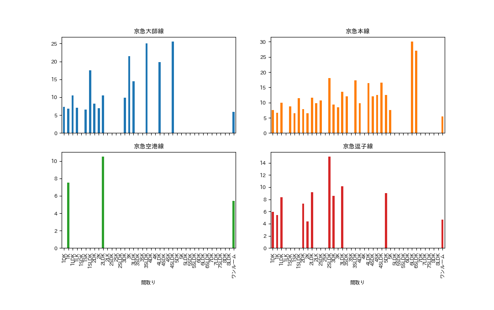
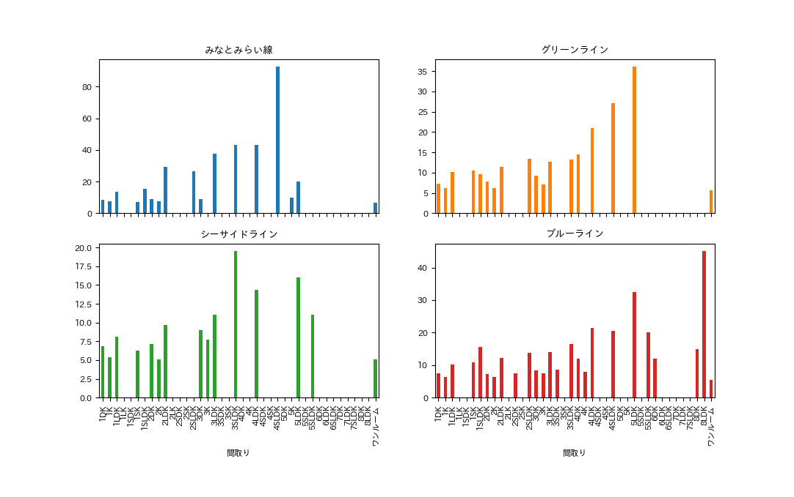
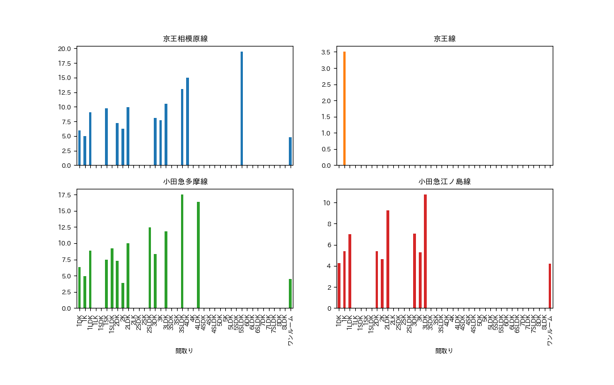
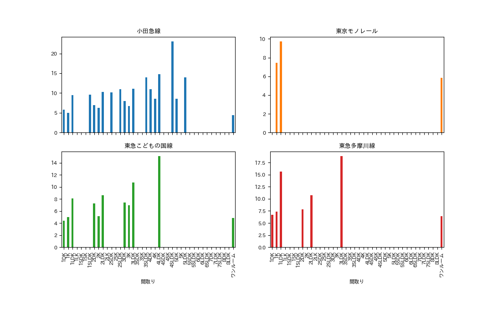
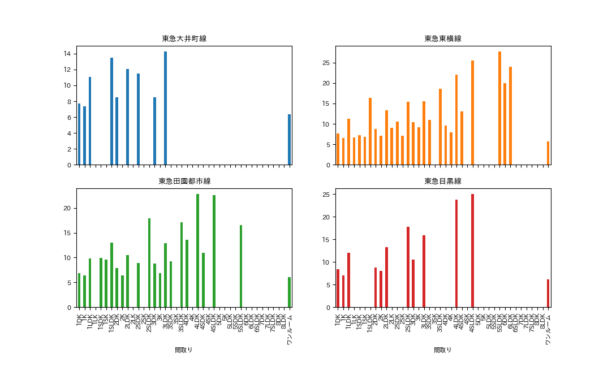
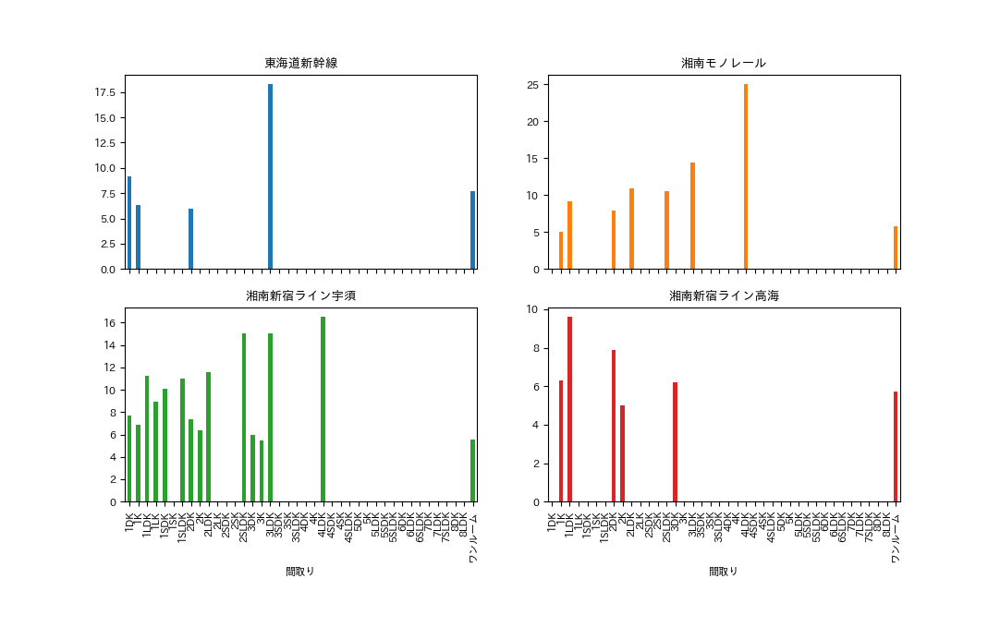
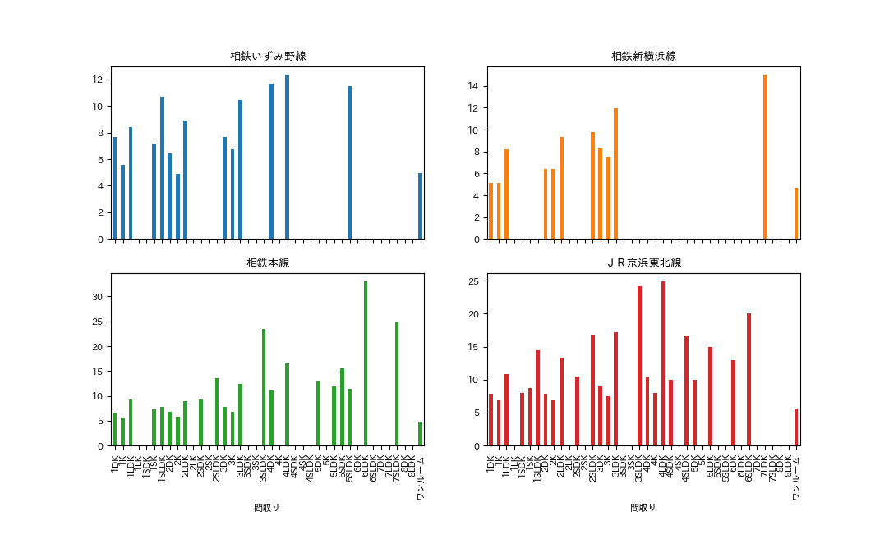
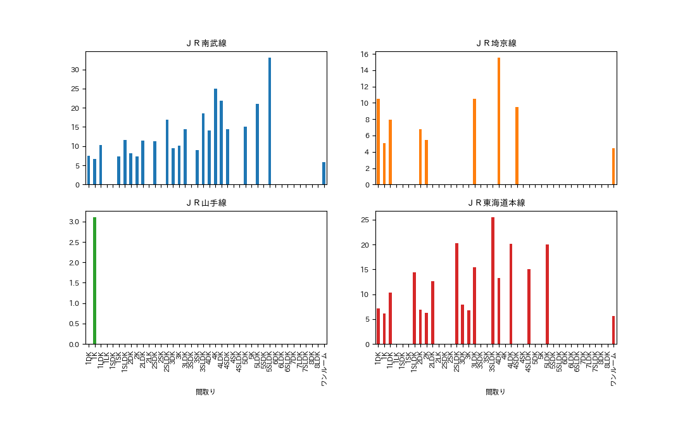
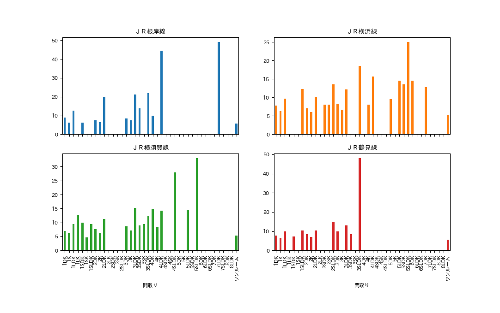

第7回のまとめ
お勧めできるエリア
物件の条件
- 家賃(6万円以下)参考：首都圏（1都3県）大学生平均家賃月5万3,930円(全国大学生活協同組合連合会調べ/2019)
- 間取り(ワンルーム、1DK、1LDK)
- 合計時間(路線ごと平均)40分以内
こういった物件が多いことをよい地域であることの条件として調べた
データ参考









路線ごとの、間取り別の家賃をグラフに表した
この条件より
- 京急本線
- グリーンライン
- ブルーライン
- 東急田園都市線
- 小田急線
- 東急こどもの国線
- 相鉄新横浜戦
- 相鉄線
- JR横浜線
- JR横須賀線
- JR南武線
- JR山手線
- JR東海道本線
といった路線が挙げられた
次に、この線の中で一番学校までの合計時間を調べた
路線
京急本線 32.443305
ＪＲ東海道本線 36.014620
ＪＲ横須賀線 36.193528
ブルーライン 40.653219
ＪＲ横浜線 41.011040
ＪＲ南武線 49.055883
グリーンライン 49.502637
相鉄新横浜線 52.188312
東急田園都市線 62.120828
東急こどもの国線 67.246377
小田急線 72.779494
ＪＲ山手線 78.000000
小田急多摩線 84.635359
京王線 110.000000
これより、合計時間が40分ほどの路線は
短い順で、京急本線、JR東海道線、JR横須賀線の3路線に絞られる
この3路線のなかで一番該当する駅が多いのは京急本線である
これらの結果より、神奈川県内の京急本線沿線の地域
が大学生が一人暮らしをするにおいておすすめな地域であると考える
＜感想＞
比べる際に駅ごとの物件を上手く調べることができなくて、その部分において信憑性が低いデータ
になってしまった。
調べる上で実際にデータを探す前にどの部分で判断をするのかという思考を持つことが必要だと感じた。
参考サイト：大学生の一人暮らし、家賃6万円は高い？ 仕送りから生活費、学生向け物件の探し方まで紹介 | 【LIFULL HOME'S】住まいのお役立ち情報
NAVI TIME